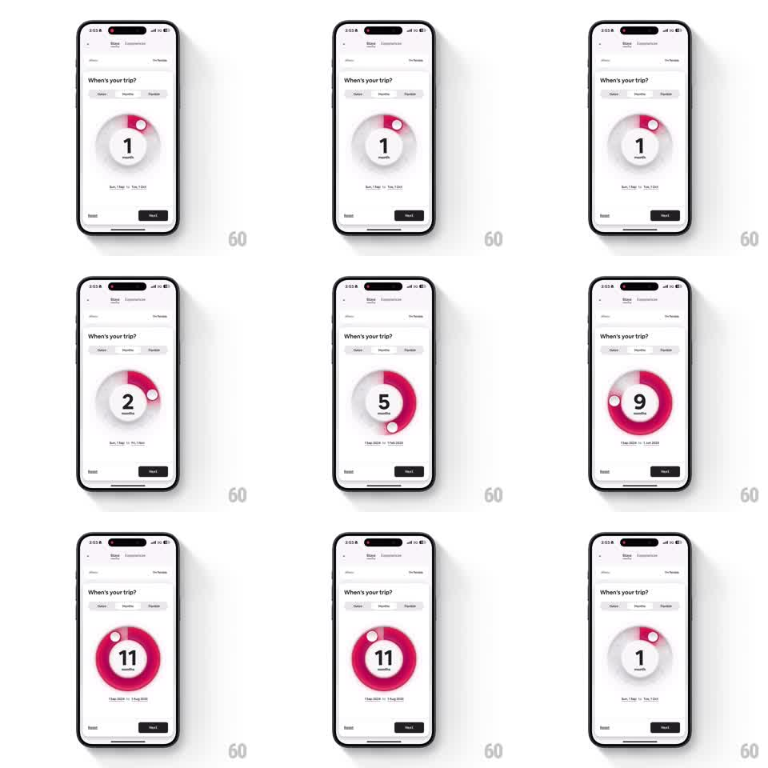

Media
Frame-by-frame

Rebuild this interaction 1:1: Airbnb's trip-length circular slider - a magenta arc that grows around a ring as you drag, with the month count snapping in the center.

Rebuild this interaction 1:1: Airbnb's trip-length circular slider - a magenta arc that grows around a ring as you drag, with the month count snapping in the center. ## Integration Integration: stack-agnostic spec - springs given as stiffness/damping, timed motions as duration + curve; map every value to your framework and animation library of choice. ## Scene White "When's your trip?" screen (Dates / Months / Flexible tabs, Months active). Center: a large circular slider - light gray track ring, a white knob, and a magenta progress arc that thickens as it grows. Inside the ring: a big numeral with "month(s)" beneath. Below the ring: the computed date range. Reset and Next buttons at the bottom. ## Motion spec Pattern: radial drag arc with stepping readout. - Drag the knob along the ring (1:1 angular tracking): the magenta arc sweeps behind it from the 12 o'clock origin, thickening slightly and deepening in saturation as the value grows (thin pale pink at 1 month, thick vivid magenta at 11+). - The center numeral snaps to the new month the instant the knob crosses a step threshold (30 degrees per month): digits flip with a quick vertical roll (150ms, ease-out); "month" / "months" pluralization swaps with a 100ms crossfade. - The date range line below retypes on each step (old value slides down and fades, new slides up, 180ms). - Release: the knob springs to the exact step angle (~380/24), the arc easing into place behind it. - The knob has a soft shadow and a subtle scale-up (1.15x) while touched. ## Calibration - Angular snapping is absolute - the knob can never rest between month steps. - Arc thickness/saturation interpolation is continuous even though the value is discrete. ## Reduced motion Numeral crossfades; arc draws without thickness animation. ## Don't miss - The arc always starts at 12 o'clock and grows clockwise only. - The magenta is Airbnb's Rausch pink; the track stays a whisper-light gray.